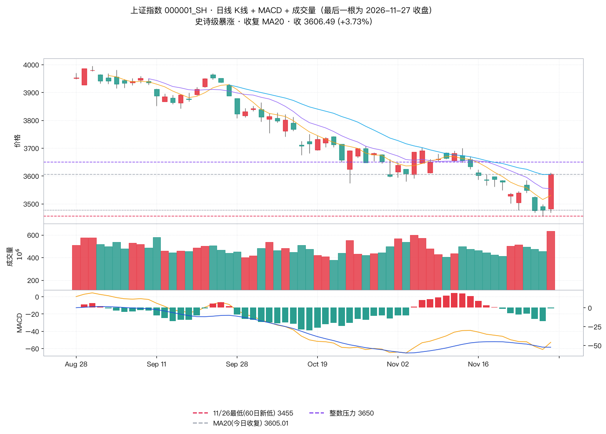
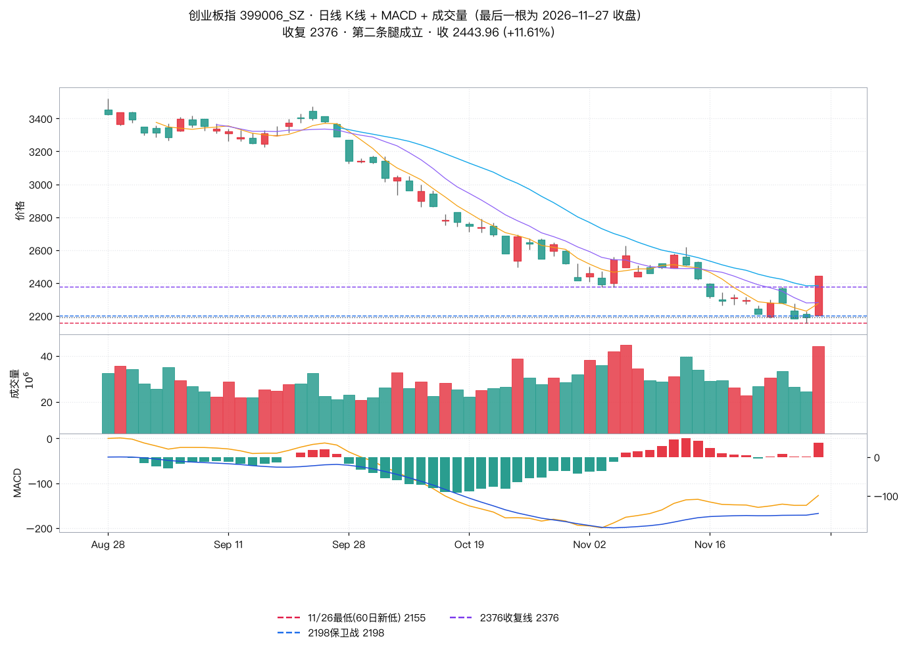
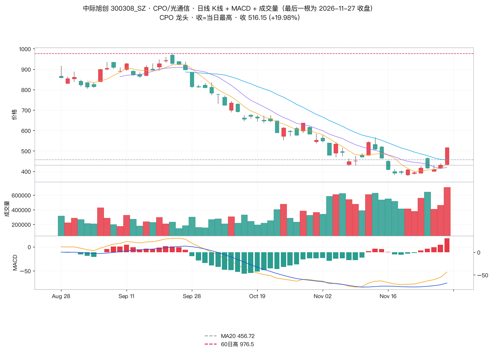
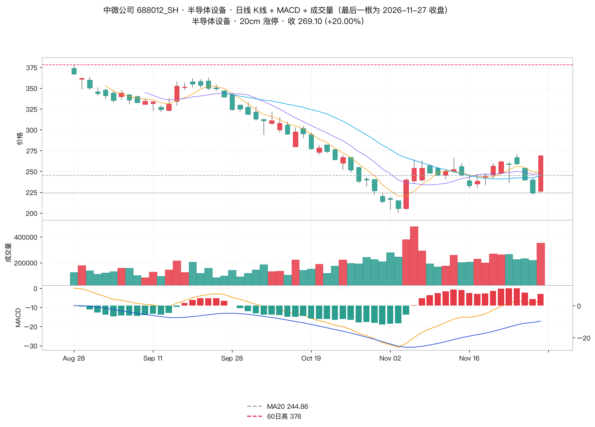
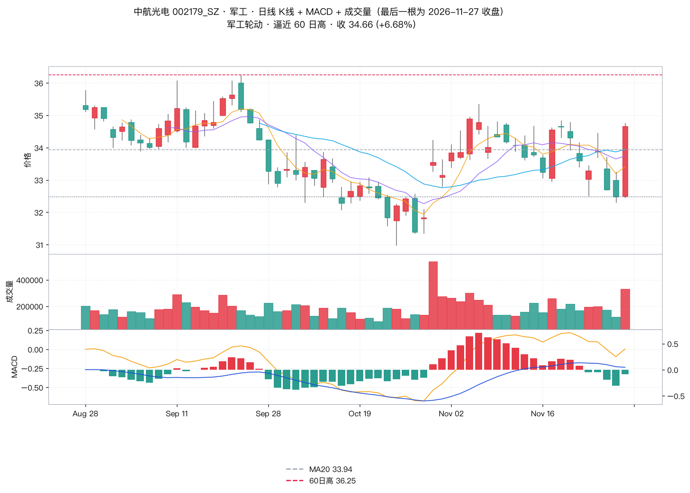

🟢 15:05「创业板收2443.96点…涨11.61%」「科创50指数收1346点，涨15.07%」分毫不差；11:20「收复2376点第二条腿就够长」也兑现，收 2443.96 超 2.9%。🔴 两处打脸：09:55「暂时没见量能」→ 全天两市 20019 亿（+51.8%）；15:05 沪指写成「2606点」，实际 3606.49。操作：不追 20cm 涨停潮，主线只留 CPO 与半导体各一份，底仓把今天被杀的银行、煤炭换掉。
| 时间 | 信号 | 原文（逐字） | 实测判定 |
|---|---|---|---|
| 09:55 | 量能 | 「暂时没见量能！」 | ❌ 盘中早段口径，11:30 已推翻：全天两市 20019 亿，前日 13186 亿，+51.8% |
| 10:08 | 板块 | 「交换机，端侧，算力租赁，CPO，半导体等科技类股目前暂时领先」 | ✅ 全中：交换机 +12.38%、CPO +13.28%、算力租赁 +10.11%、半导体设备 +17.00%（10 家全涨停）；端侧无池 |
| 10:57 | 反弹 | 「市场有一定的反弹力量了，整体看还需要板块效应才能放大成交量」 | ✅ 方向一致、幅度更大：创业板 +11.61%、涨停 440 家、成交 +51.8% |
| 11:17 | 点位 | 「属于第一次2198保卫战」 | ✅ 未破：早盘最低 2199.23＞2198，收 2443.96 |
| 11:20 | 点位 | 「创业板指数收复2376点的话，第二条腿就够长啦」 | ✅ 兑现：收 2443.96，超 2376（11/24 高 2376.34）2.9% |
| 11:28 | 点位 | 「昨日大盘的3455点，创业板的2155点，深成指的9979点」 | ✅ 分毫不差：11/26 最低 3455.04／2155.01／9979.06，全是 60 日新低 |
| 12:05 | 点位 | 「早上收在2272点」 | ✅ 分毫不差：早盘创业板收 2272.72 |
| 15:05 | 收盘 | 「今天大盘收2606点（昨日试2455点），涨3.73%；深成指收10814点（昨日试9979点），涨7.24%；创业板收2443.96点（昨日试2155点），涨11.61%；科创50指数收1346点（昨日试1156点），涨15.07%」 | ⚠️ 沪指疑似笔误：实际 3606.49、昨日最低 3455.04，涨幅 3.73% 对；深成 10814、创业板 2443.96、科创50 1346.25／+15.07%／昨日 1156.57 全部分毫不差 |
| 15:05 | 结构 | 「按日线看符合“一剑封喉”的标准。至于能反击多好，下周3个交易日可以定调」 | 结构定性按博主口径引用，不复算；「下周3个交易日」＝ 11/30–12/2 定调窗口 |
| 17:15 | 归因 | 「技术面连续超卖+ C5完成，加上政策暖风，加上11月30日后的杠杆率资金」 | 归因与前瞻：11/30 后杠杆资金无法核验，其余三项方向一致 |
| 19:13 | 公告 | 「每股派发现金红利25.60元…总股本为12.5亿股，合计派发现金红利320.02亿元」 | ✅ 算术自洽：12.5×25.60＝320.0 亿；市场只给茅台 +0.23%（白酒池 +1.15%），属事件记录，不构成买点 |
11/27 上证收 3606.49（+3.73%）收复 MA20 3605.01，深成指 10814.02（+7.24%）仍差 MA20 10825.22 一步，创业板指 2443.96（+11.61%）收在当日最高，科创50 1346.25（+15.07%）。两市成交 20019 亿（前日 13186 亿，+51.8%），涨 5382／跌 181，涨停 440 家（前日 65）、跌停 1 家，最高 6 板（克来机电）。

开 3482.38／高 3610.72／低 3467.41／收 3606.49，收在当日高点附近并收复 MA20 3605.01；60 日新低 3455.04 已被甩开。

开 2202.82／高 2444.60／低 2199.23／收 2443.96＝当日最高；2155、2198、2376 三条线全部收复。
| 板块 | 11/27 池均值 | 申万交叉验证 | 龙头实测 | 打法 |
|---|---|---|---|---|
| 半导体设备 | +17.00%（10涨0跌，10 家涨停） | 电子 +11.53%（622涨2跌） | 中微公司 269.10 涨停，量比 136%，站上 MA20 244.86 | 主线：回踩 MA5 250 不破分批，破 MA20 放弃 |
| CPO/光通信 | +13.28%（8涨0跌，5 家涨停） | 通信 +9.60%（158涨4跌） | 中际旭创 516.15 +19.98%，额 334 亿，量比 127%，站上 MA20 456.72 | 主线：不追涨停价，守住 MA20 才留仓 |
| 国防军工 | +6.23%（8涨0跌） | 国防军工 +8.63%（154涨0跌） | 中航光电 34.66 +6.68%，量比 163%，站上 MA20 33.94，距 60 日高 36.25 仅 −4.4% | 轮动补涨：破 MA20 33.94 放弃 |
回避：银行/红利 −1.99%（0涨6跌）、煤炭 −2.03%（0涨4跌）、铁路运营 −0.76%。三个板块里两个是她 10:08 点名的方向，半导体设备更是 10 家全涨停——但涨停潮里多为小票与超跌股，按她自己的纪律「分批、不压单一板块」，只做龙头、不做板块满仓。
| 标的 | 11/27 收盘 | 关键位 | 动作 |
|---|---|---|---|
| 中际旭创 300308 | 516.15（+19.98%） | MA20 456.72／MA5 437.91／60 日高 976.50（−47.1%） | 主线龙头：不追高，回踩 MA5 不破持有，破 MA20 减 |
| 中微公司 688012 | 269.10（+20.00%） | MA20 244.86／MA5 250.16／60 日高 378.00（−28.8%） | 次主线：回踩 MA5 250 分批，破 MA20 放弃 |
| 中航光电 002179 | 34.66（+6.68%） | MA20 33.94／MA10 33.74／60 日高 36.25（−4.4%） | 轮动对冲：站上 36.25 才加速，破 MA20 走弱 |

收 516.15（+19.98%）＝当日最高，成交 334 亿居两市前列，量比 127%，站上 MA20 456.72。

收 269.10（+20.00%）20cm 涨停，额 87.14 亿，量比 136%；昨日该股是池内最弱（−6.52%），今日最强。

收 34.66（+6.68%），量比 163%，站上 MA20 33.94，逼近 60 日高 36.25。
三只里两只同属科技链（中际旭创、中微公司）→ 按一份科技仓位算；今天没有可用的防御方向，银行、煤炭都在杀。
| 她的说法 | 实测 | 判定 |
|---|---|---|
| 「暂时没见量能！」（09:55） | 全天两市 20019 亿，前日 13186 亿，+51.8% | 盘中早段口径，收盘完全证伪 |
| 「今天大盘收2606点（昨日试2455点）」（15:05） | 实际 3606.49、昨日最低 3455.04；涨幅 3.73% 正确 | 点位疑似笔误（其余深成、创业板、科创50 全中） |
| 「昨晚欧洲股市涨2%左右」（07:11） | 富时100 11/26 +0.77%；DAX 无快照源 | 无法核验 |
| 「端侧…领先」（10:08） | 自建池无端侧板块 | 无法核验（其余四个方向全中） |
| 状态变化：昨日底仓（煤炭／银行）今日反杀 | 煤炭池 −2.03%、银行池 −1.99%，神华 −4.04%、交行 −2.70% | 底仓逻辑一日失效 |
采集：weibo skill 时间线 10 条 + 词表搜索 15 条，跨文件汇总后 11/27 唯一帖 24 条，截稿 2026-11-27 20:50。
行情：Tushare Pro 日线（前复权，11/27 收盘）＋ 新浪／腾讯快照（外盘、港股）；11/27 日线已发布，全部指标为收盘口径。
免责声明：以上为博主观点的第三方核验记录，不构成投资建议。